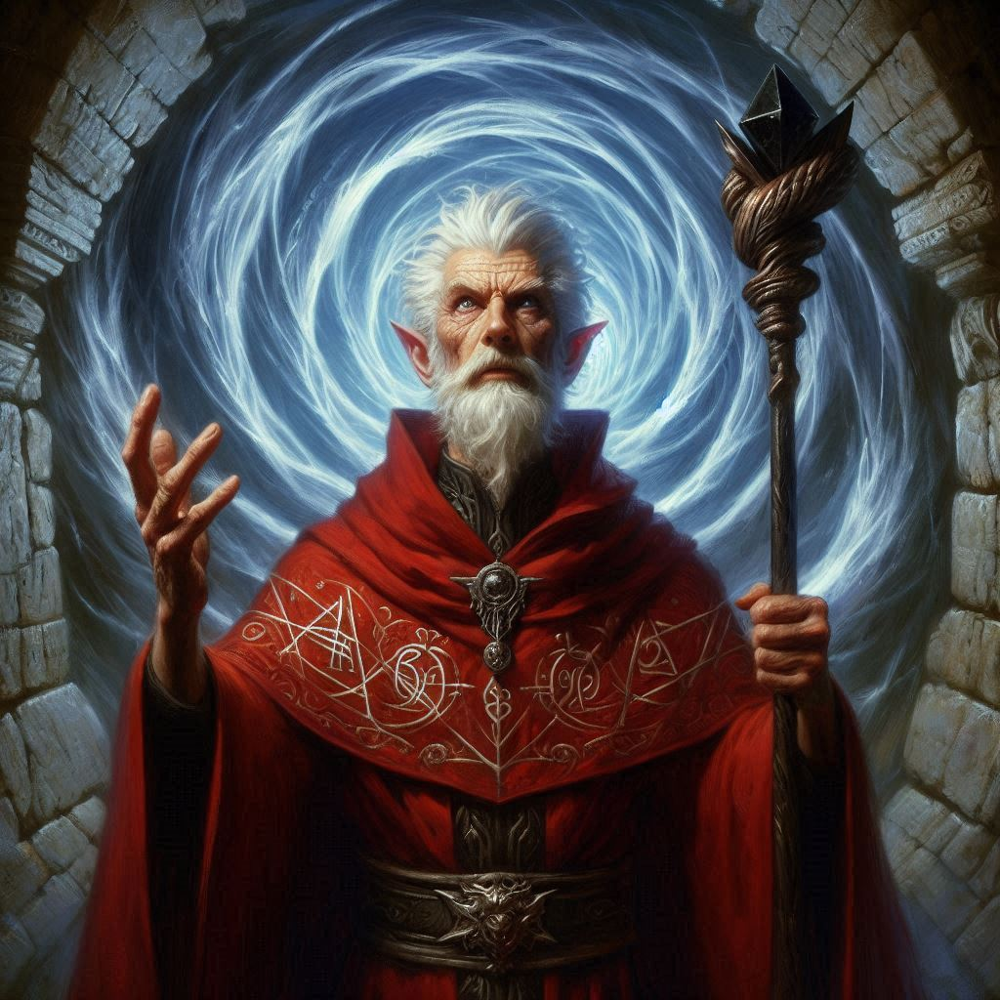
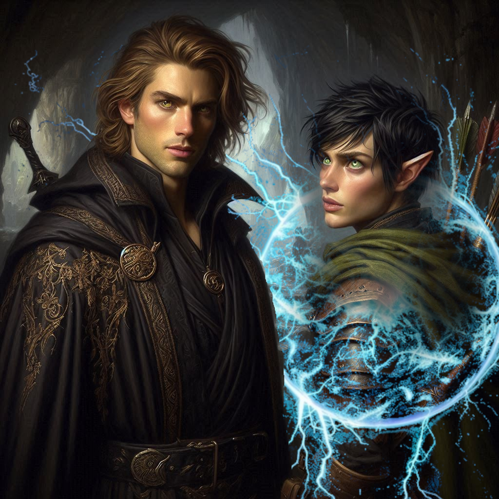

Paralysis by Analysis
The air in the caverns is cold and damp as you study Hawthorn’s map. It shows two routes through Hemlock Falls—one marked "danger," the other winding and longer but marked "less dangerous." You exchange a look with Elias, his green eyes glowing faintly in the torchlight.
"We should take the long way," you say, your voice echoing softly in the stone corridor. "We can’t risk running into more of Varis’ forces if we take the shortcut."
Elias nods, his jaw tense. “I trust you.”
With a final glance back at the entrance to ensure the princess is securely bound, you step forward, the weight of the decision settling on your shoulders. Every sound seems amplified in the silence—the scuff of your boots, the crackle of Elias' torch. This part of the cavern feels abandoned, its towering rock formations untouched for centuries. The deeper you go, the more the stone seems to close in around you, like the mountain itself is watching.
Hours pass as you and Elias navigate through the narrow tunnels, the passages twisting and branching in ways that make you lose track of time. At one point, you stop to rest. The air is thick with the smell of moss, and your limbs ache from the journey, but you can’t afford to slow down.
"We’re getting close," Elias says, glancing at the map and then up at you. "The Chamber of Portals should be just ahead."
You feel the pull of dread tightening in your chest. The Chamber of Portals—the very heart of Hemlock Caverns—is where Varis is opening a gateway to the Realm of Shadows. You know what’s at stake, yet a small, persistent part of you can’t help but think of Jorsh. Is he still the boy you once loved? Or is he truly lost to the darkness, a traitor to everything you once believed in?
You shake the thought away, focusing on the task at hand. With a deep breath, you and Elias continue on, the tunnel finally opening up into a massive cavern. The walls glitter with strange minerals, and in the center, high above the ground, a ledge overlooks a pit that seems to stretch endlessly into the earth. Below, torchlight flickers, illuminating a scene that makes your stomach lurch.
Varis is there. The Minister of Trade, shrouded in blood red robes, stands before an ancient altar, muttering incantations in a language you can’t understand. Before him, a swirling vortex of energy crackles and pulses—he’s opening the portal to the Realm of Shadows. Around him, mercenaries stand guard, their faces grim and hardened.
"Varis..." Elias breathes beside you. His hand instinctively moves to his bow.
You crouch low behind a jagged rock, watching the ritual unfold. A horrible realization sinks in as you see a large stone slab in the center of the chamber, stained with blood. Varis intends to make a sacrifice—to the demon Yaldaboath, no doubt. If he succeeds, the portal will remain open, allowing the dark elves and their demonic allies to flood into Belladonna, and maybe even the whole Kingdom of Yew.
But before you can make a move, a cold, eerie whisper fills the cavern.
“Hello, Kira.”
You spin, reaching for your blade, but it’s too late. A wave of dark energy washes over you, freezing your limbs in place. Elias, too, stands paralyzed beside you, his bow halfway drawn. Your breath catches in your throat as you see him—Jorsh.
He steps out of the shadows, his face partially concealed beneath a hood, but you recognize him instantly. His eyes, once filled with warmth, are now sharp, glinting with dark power. His lips curl into a smile, but it’s a smile devoid of joy.
“I’m flattered you came,” Jorsh says, his voice low and cold. "But this isn’t your fight."
You try to speak, but the paralysis spell keeps you still. You can’t move. You can’t fight. But you can listen.
“I know what you’re thinking,” Jorsh continues, pacing slowly around you and Elias. "That I’m a traitor. That I’ve been lost to dark magic." His tone softens, almost nostalgic. "But it’s not that simple."
You grit your teeth, forcing your body to break free of the spell’s grip, but it’s no use. Jorsh stops in front of you, meeting your gaze.
“Varis is trying to summon Yaldaboath, and if he succeeds, everything will be lost,” Jorsh says, his voice gaining urgency. "I’m not the villain here, Kira. I’m trying to stop him."
Your heart pounds in your chest as his words sink in. Stop him? Could Jorsh—your Jorsh—really be trying to save the kingdom? Or is this another one of his manipulations, another scheme cloaked in half-truths?
“I know you don’t trust me,” he continues, stepping back. "But I don’t have time to convince you. I’m going through that portal, and I’m going to stop Varis. Yaldaboath will never walk this world as long as I breathe."
The dark energy around you fades, and suddenly, you’re free. Elias staggers beside you, blinking in shock. But your mind is racing.
Jorsh stands at the edge of the chamber, facing the swirling portal. His words hang in the air, full of meaning and danger. He’s giving you a choice.
Do you believe him?
You glance at Elias, who looks just as torn as you feel. He’s always been loyal, always the one you could count on. But Jorsh... he was once your everything. And now, here he is, offering to join forces—to stop Varis and the demon Yaldaboath, to protect the kingdom from certain doom.
Your mind spins. If Jorsh is telling the truth, you could use his knowledge of dark magic to stop Varis. But what if he betrays you again? What if he’s only using you to fulfill his own twisted desires?
Elias catches your eye, waiting for your decision. The map lies forgotten on the ground, its secrets no longer the most pressing concern. “Kira,” Elias says, eyeing Jorsh suspiciously, “if you choose to go with Jorsh, that is a path I cannot go with you.”
“It looks like your friend is a coward, Kira,” Jorsh sneers.
“It’s not cowardice,” Elias says. “I’m not afraid of you. I’m not afraid to die protecting the kingdom. But if you fail on your mission, or worse… if you’re lying, someone needs to get reinforcements and warn the people of Belladonna.”
“Fair enough,” Jorsh says with a contemptuous shrug. “Kira. Choose to come with me and help me save the kingdom. Or choose to go with Elias, and wonder what could have been for the rest of your life.”
You have two paths ahead of you, just as you did before. But this time, the stakes are even higher.
Will you join forces with Jorsh to stop Varis? Or will you arrest him, staying true to the mission you were given?
The choice is yours.